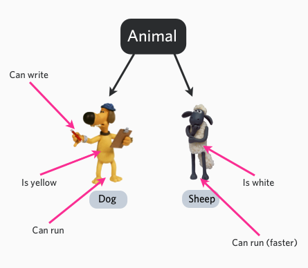

PHP オブジェクト指向
オブジェクト指向（Object-Oriented、略称 OO）は、プログラミングの思想および手法の一つであり、プログラム内のデータとデータを操作するメソッドをひとまとめにカプセル化して「オブジェクト」を形成し、オブジェクト同士の相互作用とメッセージ受け渡しによってプログラムの機能を実現します。オブジェクト指向プログラミングでは、データのカプセル化、継承、多態性、動的束縛などの特性を重視し、プログラムの拡張性、保守性、再利用性をより高めます。
オブジェクト指向プログラミング（英語: Object-oriented programming、略称: OOP）では、オブジェクトは情報とその情報を処理する記述から構成される全体であり、現実世界の抽象化です。
現実世界で私たちが直面するものはすべてオブジェクトです。例えば、コンピューター、テレビ、自転車などです。
オブジェクトの主な3つの特性：
- オブジェクトの振る舞い：オブジェクトが実行できる操作。例えば、電気をつける、消すなどが振る舞いです。
- オブジェクトの形態：オブジェクトのさまざまな振る舞いに対する応答の仕方。例えば、色、サイズ、外観などです。
- オブジェクトの表現：オブジェクトの表現は身分証明書に相当し、同じ振る舞いと状態の中での相違を具体的に区別します。
例えば、Animal（動物）は抽象クラスです。これを具体的に犬と羊にすることができます。犬と羊は具体的なオブジェクトであり、色という属性を持ち、鳴く、走るなどの振る舞いや状態があります。

オブジェクト指向プログラミングの3つの主要な特性：
カプセル化（Encapsulation）：オブジェクトの属性とメソッドをひとまとめにし、外部からオブジェクトの内部状態に直接アクセスしたり変更したりできないようにします。アクセス修飾子（public、private、protected）を使用して属性とメソッドのアクセス権限を制限することで、カプセル化を実現します。
継承（Inheritance）：新しいクラスを作成でき、そのクラスは親クラスの属性とメソッドを継承し、さらに独自の属性とメソッドを追加できます。継承により、似たようなコードを重複して書くことを避け、コードの再利用を実現できます。
多態性（Polymorphism）：親クラス型の変数を使用して異なるサブクラス型のオブジェクトを参照できるようにし、異なるオブジェクトに対する統一的な操作を実現します。多態性により、コードがより柔軟になり、拡張性と保守性が向上します。PHP では、多態性はインターフェース（interface）の実装と抽象クラス（abstract class）の使用によって実現できます。
オブジェクト指向の内容
类− ある物事の抽象的な特徴を定義します。クラスの定義は、データの形式とデータに対する操作を含みます。
オブジェクト− クラスのインスタンスです。
メンバー変数− クラス内部で定義される変数です。この変数の値は外部からは見えませんが、メンバー関数を通じてアクセスできます。クラスがオブジェクトとしてインスタンス化されると、この変数はオブジェクトの属性になります。
メンバー関数− クラスの内部で定義され、オブジェクトのデータにアクセスするために使用できます。
継承− 継承性は、子クラスが親クラスのデータ構造とメソッドを自動的に共有する仕組みであり、クラス間の関係のひとつです。クラスを定義・実装する際には、既存のクラスを基礎として行うことができ、既存のクラスで定義された内容を自分の内容として取り込み、さらにいくつかの新しい内容を追加します。
親クラス− あるクラスが他のクラスに継承される場合、そのクラスは親クラス、基底クラス、またはスーパークラスと呼ばれます。
子クラス− 他のクラスを継承するクラスは子クラスと呼ばれ、派生クラスとも呼ばれます。
多態性− 多態性とは、同じ関数またはメソッドが複数の型のオブジェクトに対して作用し、異なる結果を得られることを指します。異なるオブジェクトが同じメッセージを受け取って異なる結果を生じる現象を多態性と呼びます。
オーバーロード− 簡単に言えば、関数やメソッドが同じ名前であるがパラメータリストが異なる場合です。このような同名で異なるパラメータを持つ関数やメソッド同士を、互いにオーバーロード関数またはメソッドと呼びます。
抽象性− 抽象性とは、一貫したデータ構造（属性）と振る舞い（操作）を持つオブジェクトをクラスとして抽象化することを指します。クラスとはそのような抽象であり、アプリケーションに関連する重要な性質を反映し、他の無関係な内容を無視します。クラスの区分は主観的ですが、具体的なアプリケーションに関連している必要があります。
カプセル化− カプセル化とは、現実世界に存在するある対象の属性と振かくを結び付け、論理のな単位の中に配置することを指します。
コンストラクター− 主にオブジェクト作成時にオブジェクトを初期化するために使用され、オブジェクトのメンバー変数に初期値を代入します。常に new 演算子と一緒にオブジェクト生成文で使用されます。
デストラクター− デストラクター（destructor）はコンストラクターとは逆で、オブジェクトがそのライフサイクルを終了するとき（例えば、オブジェクトが存在する関数の呼び出しが完了したとき）、システムが自動的にデストラクターを実行します。デストラクターはしばしば「後片付け」の作業に使用されます（例えば、オブジェクトを生成するときに new でメモリ領域を確保した場合、終了前にデストラクター内で delete を使用して解放する必要があります）。
次の図では、Car クラスを使用して、Mercedes、Bmw、Audi の3つのオブジェクトを作成しています。
$mercedes = new Car (); $bmw = new Car (); $audi = new Car ();

PHP クラス定義
PHP でクラスを定義する通常の構文は次のとおりです：
<?php
class phpClass {
var $var1;
var $var2 = "constant string";
function myfunc ($arg1, $arg2) {
[..]
}
[..]
}
?>
解説は次のとおりです：
クラスの使用classキーワードの後にクラス名を付けて定義します。
クラス名の後の中括弧（{}）の中に変数とメソッドを定義できます。
クラスの変数はvarvar を使用して宣言され、変数は初期化値を持つこともできます。
関数定義は PHP の関数定義に似ていますが、関数はそのクラスおよびそのクラスからインスタンス化されたオブジェクトからのみアクセスできます。
サンプル
<?php
class Site {
/* 成员变量 */
var $url;
var $title;
/* 成员函数 */
function setUrl($par){
$this->url = $par;
}
function getUrl(){
echo $this->url . PHP_EOL;
}
function setTitle($par){
$this->title = $par;
}
function getTitle(){
echo $this->title . PHP_EOL;
}
}
?>
変数$this自分自身を表すオブジェクトです。
PHP_EOL改行文字です。
PHP でのオブジェクトの作成
クラスを作成した後、次を使用できます：newnew 演算子を使用して、そのクラスのオブジェクトをインスタンス化します：
$サンプル = new Site; $taobao = new Site; $google = new Site;
上記のコードでは3つのオブジェクトを作成しました。3つのオブジェクトはそれぞれ独立しています。次に、メンバーメソッドとメンバー変数にアクセスする方法を見てみましょう。
メンバーメソッドの呼び出し
オブジェクトをインスタンス化した後、そのオブジェクトを使用してメンバーメソッドを呼び出すことができます。そのオブジェクトのメンバーメソッドは、そのオブジェクトのメンバー変数のみを操作できます：
// 调用成员函数，设置标题和URL $サンプル->setTitle( "サンプル" ); $taobao->setTitle( "淘宝" ); $google->setTitle( "Google 搜索" ); $サンプル->setUrl( 'www.example.com' ); $taobao->setUrl( 'www.taobao.com' ); $google->setUrl( 'www.google.com' ); // 调用成员函数，获取标题和URL $サンプル->getTitle(); $taobao->getTitle(); $google->getTitle(); $サンプル->getUrl(); $taobao->getUrl(); $google->getUrl();
完全なコードは次のとおりです：
サンプル
class Site {
/* メンバー変数 */
var $url;
var $title;
/* メンバー関数 */
function setUrl($par){
$this->url = $par;
}
function getUrl(){
echo $this->url . PHP_EOL;
}
function setTitle($par){
$this->title = $par;
}
function getTitle(){
echo $this->title . PHP_EOL;
}
}
$サンプル = new Site;
$taobao = new Site;
$google = new Site;
// メンバー関数を呼び出して、タイトルとURLを設定する
$サンプル->setTitle( サンプル);
$taobao->setTitle( 淘宝);
$google->setTitle( Google 搜索);
$サンプル->setUrl( 'www.example.com' );
$taobao->setUrl( 'www.taobao.com' );
$google->setUrl( 'www.google.com' );
// メンバー関数を呼び出して、タイトルとURLを取得する
$サンプル->getTitle();
$taobao->getTitle();
$google->getTitle();
$サンプル->getUrl();
$taobao->getUrl();
$google->getUrl();
?>
サンプルを実行 »
上記のコードを実行すると、出力結果は次のとおりです：
サンプル 淘宝 Google 搜索 www.example.com www.taobao.com www.google.com
PHP コンストラクター
コンストラクターは特別なメソッドです。主にオブジェクトを作成するときにオブジェクトを初期化し、オブジェクトのメンバー変数に初期値を代入するために使用されます。オブジェクトを作成する文ではnewnew 演算子と一緒に使用されます。
PHP 5 では、開発者がクラス内でメソッドをコンストラクターとして定義できます。構文は次のとおりです：
void __construct ([ mixed $args [, $... ]] )
上の例では、コンストラクターを使用して $url と $title 変数を初期化できます：
function __construct( $par1, $par2 ) {
$this->url = $par1;
$this->title = $par2;
}
これで、setTitle メソッドと setUrl メソッドを呼び出す必要はなくなります：
サンプル
$taobao = new Site('www.taobao.com', '淘宝');
$google = new Site('www.google.com', 'Google 搜索');
// メンバー関数を呼び出して、タイトルとURLを取得する
$サンプル->getTitle();
$taobao->getTitle();
$google->getTitle();
$サンプル->getUrl();
$taobao->getUrl();
$google->getUrl();
サンプルを実行 »
デストラクター
デストラクター（destructor）はコンストラクターとは逆で、オブジェクトがそのライフサイクルを終了するとき（例えば、オブジェクトが存在する関数の呼び出しが完了したとき）、システムが自動的にデストラクターを実行します。
PHP 5 では、他のオブジェクト指向言語と同様のデストラクターの概念が導入されました。その構文は次のとおりです：
void __destruct ( void )
サンプル
<?php
class MyDestructableClass {
function __construct() {
print "构造函数\n";
$this->name = "MyDestructableClass";
}
function __destruct() {
print "销毁 " . $this->name . "\n";
}
}
$obj = new MyDestructableClass();
?>
上記のコードを実行すると、出力結果は次のとおりです：
构造函数 销毁 MyDestructableClass
継承
PHP はキーワードを使用しますextendsクラスを継承するために使用します。PHP は多重継承をサポートしていません。形式は次のとおりです。
class Child extends Parent {
// 代码部分
}
サンプル
例では、Child_Site クラスは Site クラスを継承し、機能を拡張しています。
<?php
// 子类扩展站点类别
class Child_Site extends Site {
var $category;
function setCate($par){
$this->category = $par;
}
function getCate(){
echo $this->category . PHP_EOL;
}
}
メソッドのオーバーライド
親クラスから継承したメソッドが子クラスのニーズを満たさない場合、それを書き換えることができます。このプロセスをメソッドのオーバーライド（override）と呼びます。
例では、getUrl メソッドと getTitle メソッドがオーバーライドされています。
function getUrl() {
echo $this->url . PHP_EOL;
return $this->url;
}
function getTitle(){
echo $this->title . PHP_EOL;
return $this->title;
}
アクセス制御
PHP のプロパティまたはメソッドへのアクセス制御は、前にキーワード public（公開）、protected（保護）、または private（プライベート）を追加することで実現されます。
- public（公開）：公開されたクラスメンバーは、どこからでもアクセスできます。
- protected（保護）：保護されたクラスメンバーは、自身およびその子クラスと親クラスからアクセスできます。
- private（プライベート）：プライベートなクラスメンバーは、定義されたクラスからのみアクセスできます。
プロパティのアクセス制御
クラスのプロパティは、public、protected、private のいずれかとして定義する必要があります。var で定義した場合は、public とみなされます。
<?php
/**
* Define MyClass
*/
class MyClass
{
public $public = 'Public';
protected $protected = 'Protected';
private $private = 'Private';
function printHello()
{
echo $this->public;
echo $this->protected;
echo $this->private;
}
}
$obj = new MyClass();
echo $obj->public; // 这行能被正常执行
echo $obj->protected; // 这行会产生一个致命错误
echo $obj->private; // 这行也会产生一个致命错误
$obj->printHello(); // 输出 Public、Protected 和 Private
/**
* Define MyClass2
*/
class MyClass2 extends MyClass
{
// 可以对 public 和 protected 进行重定义，但 private 而不能
protected $protected = 'Protected2';
function printHello()
{
echo $this->public;
echo $this->protected;
echo $this->private;
}
}
$obj2 = new MyClass2();
echo $obj2->public; // 这行能被正常执行
echo $obj2->private; // 未定义 private
echo $obj2->protected; // 这行会产生一个致命错误
$obj2->printHello(); // 输出 Public、Protected2 和 Undefined
?>
メソッドのアクセス制御
クラス内のメソッドは、public、private、protected として定義できます。これらのキーワードが設定されていない場合、そのメソッドはデフォルトで public になります。
<?php
/**
* Define MyClass
*/
class MyClass
{
// 声明一个公有的构造函数
public function __construct() { }
// 声明一个公有的方法
public function MyPublic() { }
// 声明一个受保护的方法
protected function MyProtected() { }
// 声明一个私有的方法
private function MyPrivate() { }
// 此方法为公有
function Foo()
{
$this->MyPublic();
$this->MyProtected();
$this->MyPrivate();
}
}
$myclass = new MyClass;
$myclass->MyPublic(); // 这行能被正常执行
$myclass->MyProtected(); // 这行会产生一个致命错误
$myclass->MyPrivate(); // 这行会产生一个致命错误
$myclass->Foo(); // 公有，受保护，私有都可以执行
/**
* Define MyClass2
*/
class MyClass2 extends MyClass
{
// 此方法为公有
function Foo2()
{
$this->MyPublic();
$this->MyProtected();
$this->MyPrivate(); // 这行会产生一个致命错误
}
}
$myclass2 = new MyClass2;
$myclass2->MyPublic(); // 这行能被正常执行
$myclass2->Foo2(); // 公有的和受保护的都可执行，但私有的不行
class Bar
{
public function test() {
$this->testPrivate();
$this->testPublic();
}
public function testPublic() {
echo "Bar::testPublic\n";
}
private function testPrivate() {
echo "Bar::testPrivate\n";
}
}
class Foo extends Bar
{
public function testPublic() {
echo "Foo::testPublic\n";
}
private function testPrivate() {
echo "Foo::testPrivate\n";
}
}
$myFoo = new foo();
$myFoo->test(); // Bar::testPrivate
// Foo::testPublic
?>
インターフェース
インターフェース（interface）を使用すると、特定のクラスが実装しなければならないメソッドを指定できますが、これらのメソッドの具体的な内容を定義する必要はありません。
インターフェースはinterfaceキーワードで定義されます。標準のクラスを定義するのと同様ですが、そこで定義されるすべてのメソッドは空です。
インターフェースで定義されたすべてのメソッドは public でなければなりません。これはインターフェースの特性です。
インターフェースを実装するには、implements演算子を使用します。クラスはインターフェースで定義されたすべてのメソッドを実装する必要があります。そうしないと致命的なエラーが発生します。クラスは複数のインターフェースを実装でき、複数のインターフェース名はカンマで区切ります。
<?php
// 声明一个'iTemplate'接口
interface iTemplate
{
public function setVariable($name, $var);
public function getHtml($template);
}
// 实现接口
class Template implements iTemplate
{
private $vars = array();
public function setVariable($name, $var)
{
$this->vars[$name] = $var;
}
public function getHtml($template)
{
foreach($this->vars as $name => $value) {
$template = str_replace('{' . $name . '}', $value, $template);
}
return $template;
}
}
定数
クラス内で常に一定の値を定数として定義できます。定数を定義および使用するときは、$ 記号は必要ありません。
定数の値は固定値でなければならず、変数、クラスのプロパティ、算術演算の結果、または関数呼び出しを使用することはできません。
PHP 5.3.0 以降、変数を使用してクラスを動的に呼び出すことができます。ただし、その変数の値はキーワード（self、parent、static など）にすることはできません。
サンプル
<?php
class MyClass
{
const constant = '常量值';
function showConstant() {
echo self::constant . PHP_EOL;
}
}
echo MyClass::constant . PHP_EOL;
$classname = "MyClass";
echo $classname::constant . PHP_EOL; // 自 5.3.0 起
$class = new MyClass();
$class->showConstant();
echo $class::constant . PHP_EOL; // 自 PHP 5.3.0 起
?>
抽象クラス
クラス内の少なくとも1つのメソッドが abstract として宣言されている場合、そのクラスは abstract として宣言する必要があります。
abstract として定義されたクラスはインスタンス化できません。
abstract として定義されたメソッドは、その呼び出し方法（パラメータ）を宣言するだけで、具体的な機能の実装を定義することはできません。
抽象クラスを継承する場合、子クラスは親クラスのすべての抽象メソッドを定義する必要があります。また、これらのメソッドのアクセス制御は、親クラスと同じ（またはより緩い）でなければなりません。例えば、ある抽象メソッドが protected として宣言されている場合、子クラスで実装されるメソッドは protected または public として宣言する必要があり、private として定義することはできません。
<?php
abstract class AbstractClass
{
// 强制要求子类定义这些方法
abstract protected function getValue();
abstract protected function prefixValue($prefix);
// 普通方法（非抽象方法）
public function printOut() {
print $this->getValue() . PHP_EOL;
}
}
class ConcreteClass1 extends AbstractClass
{
protected function getValue() {
return "ConcreteClass1";
}
public function prefixValue($prefix) {
return "{$prefix}ConcreteClass1";
}
}
class ConcreteClass2 extends AbstractClass
{
public function getValue() {
return "ConcreteClass2";
}
public function prefixValue($prefix) {
return "{$prefix}ConcreteClass2";
}
}
$class1 = new ConcreteClass1;
$class1->printOut();
echo $class1->prefixValue('FOO_') . PHP_EOL;
$class2 = new ConcreteClass2;
$class2->printOut();
echo $class2->prefixValue('FOO_') . PHP_EOL;
?>
上記のコードを実行すると、出力結果は次のようになります。
ConcreteClass1 FOO_ConcreteClass1 ConcreteClass2 FOO_ConcreteClass2
さらに、子クラスのメソッドには、親クラスの抽象メソッドに存在しないオプションのパラメータを含めることができます。
例えば、子クラスがオプションのパラメータを定義し、親クラスの抽象メソッドの宣言にそれが含まれていない場合でも、正常に実行できます。
<?php
abstract class AbstractClass
{
// 我们的抽象方法仅需要定义需要的参数
abstract protected function prefixName($name);
}
class ConcreteClass extends AbstractClass
{
// 我们的子类可以定义父类签名中不存在的可选参数
public function prefixName($name, $separator = ".") {
if ($name == "Pacman") {
$prefix = "Mr";
} elseif ($name == "Pacwoman") {
$prefix = "Mrs";
} else {
$prefix = "";
}
return "{$prefix}{$separator} {$name}";
}
}
$class = new ConcreteClass;
echo $class->prefixName("Pacman"), "\n";
echo $class->prefixName("Pacwoman"), "\n";
?>
出力結果は次のとおりです。
Mr. Pacman Mrs. Pacwoman
Static キーワード
クラスのプロパティまたはメソッドを static（静的）として宣言すると、クラスをインスタンス化せずに直接アクセスできます。
静的プロパティは、クラスのインスタンス化されたオブジェクトからはアクセスできません（ただし、静的メソッドはアクセスできます）。
静的メソッドはオブジェクトを介さずに呼び出すことができるため、疑似変数 $this は静的メソッドでは使用できません。
静的プロパティは、オブジェクトから -> 演算子を使用してアクセスすることはできません。
PHP 5.3.0 以降、変数を使用してクラスを動的に呼び出すことができます。ただし、その変数の値はキーワード self、parent、static にすることはできません。
<?php
class Foo {
public static $my_static = 'foo';
public function staticValue() {
return self::$my_static;
}
}
print Foo::$my_static . PHP_EOL;
$foo = new Foo();
print $foo->staticValue() . PHP_EOL;
?>
上記のプログラムを実行すると、出力結果は次のようになります。
foo foo
Final キーワード
PHP 5 では final キーワードが追加されました。親クラスのメソッドが final として宣言されている場合、子クラスはそのメソッドをオーバーライドできません。クラスが final として宣言されている場合、継承できません。
次のコードを実行するとエラーが発生します。
<?php
class BaseClass {
public function test() {
echo "BaseClass::test() called" . PHP_EOL;
}
final public function moreTesting() {
echo "BaseClass::moreTesting() called" . PHP_EOL;
}
}
class ChildClass extends BaseClass {
public function moreTesting() {
echo "ChildClass::moreTesting() called" . PHP_EOL;
}
}
// 报错信息 Fatal error: Cannot override final method BaseClass::moreTesting()
?>
親クラスのコンストラクターを呼び出す
PHP は、子クラスのコンストラクタ内で親クラスのコンストラクタを自動的に呼び出しません。親クラスのコンストラクタを実行するには、子クラスのコンストラクタ内で呼び出す必要があります。parent::__construct() 。
<?php
class BaseClass {
function __construct() {
print "BaseClass 类中构造方法" . PHP_EOL;
}
}
class SubClass extends BaseClass {
function __construct() {
parent::__construct(); // 子类构造方法不能自动调用父类的构造方法
print "SubClass 类中构造方法" . PHP_EOL;
}
}
class OtherSubClass extends BaseClass {
// 继承 BaseClass 的构造方法
}
// 调用 BaseClass 构造方法
$obj = new BaseClass();
// 调用 BaseClass、SubClass 构造方法
$obj = new SubClass();
// 调用 BaseClass 构造方法
$obj = new OtherSubClass();
?>
上記のプログラムを実行すると、出力結果は次のようになります。
BaseClass 类中构造方法 BaseClass 类中构造方法 SubClass 类中构造方法 BaseClass 类中构造方法その他の拡張